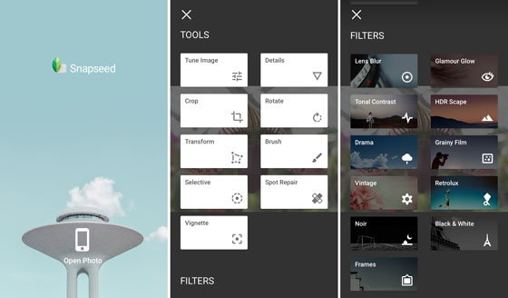

Kedoo Lightbody, a student in both the Journalism and Design program and the Fashion Design program at Parsons, spent the class talking about why he hates Photoshop and loves pens. Photoshop is too complicated, and pens are the perfect example of simplicity.
EP: So, why don’t you like Photoshop? Is it just Photoshop, or all of the Adobe programs?
KL: All of them. Like, for me personally, I go on there and I wanna edit a photo or like someone in it. If im editing a photo with someone present in it like you use certain tools that they know you’re gonna use so why not combine that into one area so that it’s easier and more user friendly. Like, if I take a picture of you right now and I wanna edit it, it is so hard because everything is so jumbled over and like, I don’t even know where to find half of the things.
EP: Are there any photo editing apps you do enjoy using?
KL: I do enjoy this editing app called Afterlight 2 , or something like that. I also enjoy Snapseed, I do enjoy that one. On there it’s way easier, like, it’s like Photoshop but everything is combined. [It’s] so easy for you so that you can actually use it. Why on Photoshop do you have to go through this whole thing and do a lot of things, just this is way better to me.
EP: How much does that app cost?
KL: Free.